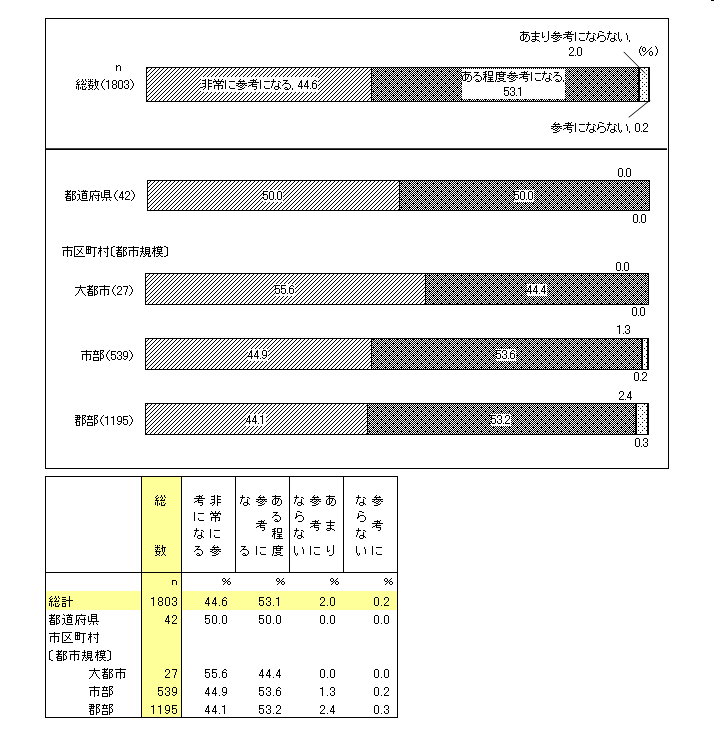
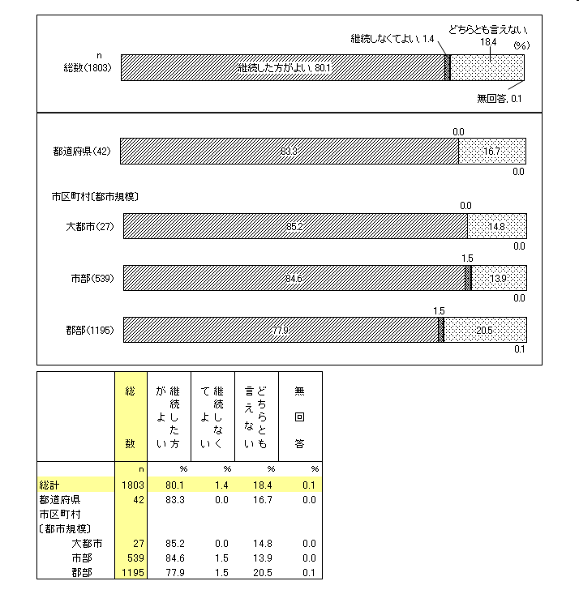
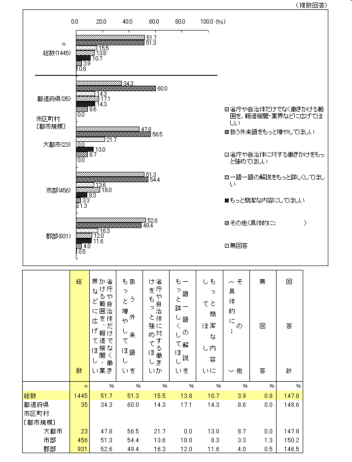
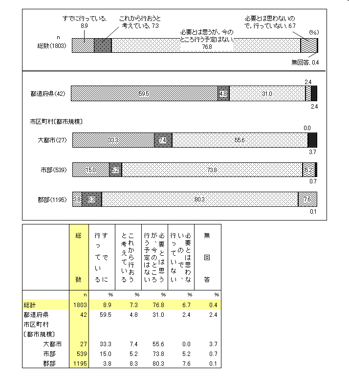
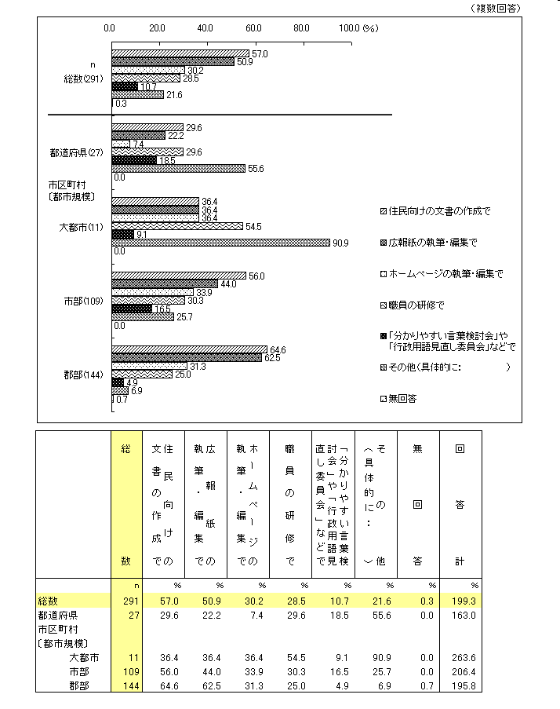
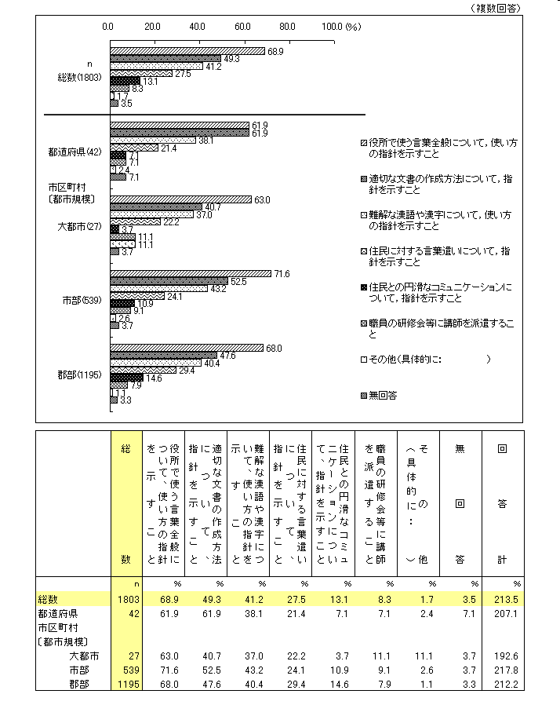

「外来語」言い換え提案：アンケート
「外来語」言い換え提案
国立国語研究所
「外来語」言い換え提案
アンケート
国立国語研究所「外来語」委員会
自治体アンケート（第１回，平成16年10月） アンケート内容
「外来語」言い換え提案に対する意識（問１～３）
（問１）国立国語研究所の「外来語言い換え提案」は，貴自治体にとって参考になりますか。

（問２）「外来語言い換え提案」は，今後も継続した方がよいとお考えですか。

（問３）上の（問２）で，「継続した方がよい」とお答えの方にお尋ねします。今後の「外来語言い換え提案」に期待することは何ですか。次の中から選んでください。いくつ選んでもかまいません。

問３ 「その他」 の回答ページへ
「外来語」言い換え提案のような試みの実施状況（問４，５）
（問４）貴自治体では，「外来語言い換え」のような試みを，組織的に行っていますか。

（問５）上の（問４）で，「すでに行っている」「これから行おうと考えている」とお答えの方にお尋ねします。具体的に，どのようなところで行っている，あるいは，行おうと考えていますか。次の中から選んでください。いくつ選んでもかまいません。

問５ 「その他」 の回答ページへ
国語研究所に対する意見・要望（問６，７）
（問６）国立国語研究所に対して，「外来語言い換え提案」のほかに，どのようなことを期待しますか。次の中から選んでください。いくつ選んでもかまいません。

問６ 「その他」 の回答ページへ
（問７）貴自治体から国立国語研究所に御要望がありましたら，どんなことでもお書きください。
回答ページへ
ページの先頭へ
本ページに関するお問い合わせはこちらへ
© 国立国語研究所 / リンクと複製について
最終更新日： 2006-08-31 (木) 11:09:36